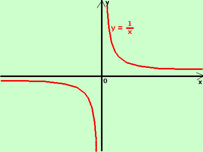

|
sviluppo xy = 1  Prima trasformo la funzione in forma esplicita
E' la funzione iperbole riferita ai suoi assi: la curva compare da -∞ partendo dall'asse x nel quarto quadrante e diminuisce di valore fino a diventare -∞ per x tendente a zero da sinistra; Poi ricompare dopo lo zero a destra partendo da +∞ e diminuisce fino ad avvicinarsi al valore zero per x tendente a +∞ L'asse x che accompagna la curva senza mai toccarla per x tendente a &plumn;∞ si dice asintoto orizzontale l'asse y cui tende la curva senza mai toccarlo per x tendente a zero da destra e da sinistra si dice asintoto verticale Asintoto dal greco asymptotos: a privativo, non, e sympiptein, congiungere, significa "non tocca" |